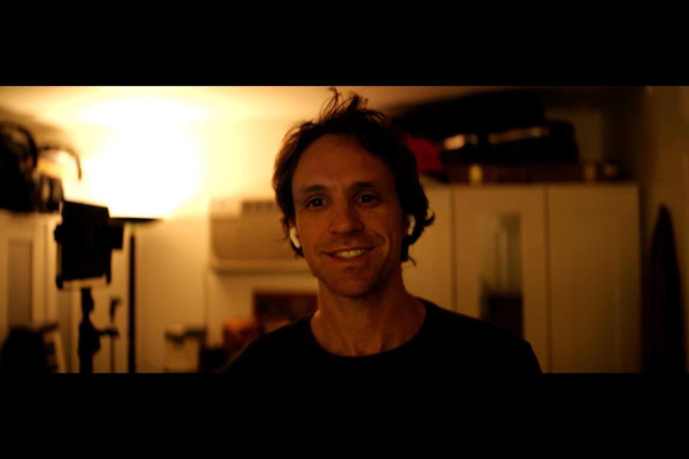

Writer, director, producer, composer
Tyler Forrest
From Louisiana to California, Tyler Forrest is a dynamic, multi-hyphenate artist whose passion for storytelling has established him as a promising voice for the future of cinema. As a true auteur, Tyler is an industry rarity, possessing deep, hands-on experience in the leading production roles of producer, director, cinematographer, editor, and composer. He writes all the original songs in his films.
Tyler's commitment to his craft is evident in his growing body of work. Following the success of previous films like The Dirty South, Search and Destroy, and Herman, he currently has several highly anticipated projects nearing completion (Strings, Balistyx, Suicide Disco) with several more in development.
Beyond his work behind the camera, Tyler is a dedicated musician, leading the music group JamNation for seven years at the legendary Rainbow Bar and Grill, where he discovered the lead cast of Strings. This profound musical background informs his filmmaking and elevates the emotional core of his projects.
At the heart of everything Tyler creates is a deeply human motivation: to reach people who are quietly living through something real — heartbreak, struggle, searching for belonging — and remind them they are not alone. His stories are not escapism; they are mirrors. Tyler believes cinema's greatest power lies in its ability to make a stranger in a dark theater feel genuinely, profoundly seen.
Tyler Forrest is not just making movies; he's bringing a vital, fresh, and unique perspective to the industry — one rooted in empathy, authenticity, and an unshakable belief in the connective power of art.